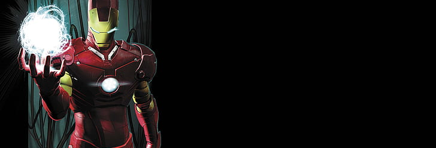

1. Creación y Orígenes (1963)
Debut:Iron Man hizo su primera aparición en Tales of Suspense #39 en marzo de 1963. Fue creado por el escritor Stan Lee, el dibujante Don Heck y el artista de portadas Jack Kirby. Orígenes: El personaje, Tony Stark, es un millonario industrial y genio inventor que queda gravemente herido durante una demostración de armas en Vietnam (originalmente) o en Afganistán (en la versión moderna). Para salvar su vida, Stark construye una armadura avanzada que utiliza para escapar de sus captores y luego se convierte en el superhéroe Iron Man.
2. La Edad de Plata (1960s-1970s)
Desarrollo del Personaje: Durante la década de 1960, Iron Man fue presentado como un personaje complejo con defectos personales y un trasfondo de riqueza y poder. Tony Stark luchaba con su ego, su adicción al alcohol y sus problemas en la industria. Rivalidades: Stark también enfrentó varios enemigos notables como el Mandarín, el Hombre de Titanium y el Melter.
3. La Edad de Bronce (1970s-1980s)
Épicas Historias: En esta era, Iron Man enfrentó historias más sofisticadas y desafíos personales. La saga de Demon in a Bottle (1979) es especialmente relevante, en la que Stark enfrenta su adicción al alcohol, una de las tramas más aclamadas y profundas del personaje. Crisis de Identidad: El personaje también experimentó una crisis de identidad y problemas con sus compañeros Vengadores, incluyendo disputas con personajes como Capitán América.
4. La Edad Moderna (1980s-presente)
Resurgimiento y Modernización: En la década de 1980 y 1990, Iron Man fue parte del renacimiento de los superhéroes con historias modernas y audaces. War Machine: James Rhodes, un amigo cercano de Tony Stark, asume el manto de Iron Man como War Machine en algunas historias, aportando una dimensión adicional al personaje. Civil War (2006-2007): Uno de los eventos más importantes en la historia reciente de Iron Man es el crossover Civil War, donde Tony Stark se convierte en el principal defensor del Registro de Superhéroes. Este evento crea una gran división entre los superhéroes, enfrentando a Iron Man contra Capitán América.
War Machine: James Rhodes, un amigo cercano de Tony Stark, asume el manto de Iron Man como War Machine en algunas historias, aportando una dimensión adicional al personaje.
Civil War (2006-2007): Uno de los eventos más importantes en la historia reciente de Iron Man es el crossover Civil War, donde Tony Stark se convierte en el principal defensor del Registro de Superhéroes. Este evento crea una gran división entre los superhéroes, enfrentando a Iron Man contra Capitán América.
Historia: Iron Man #120-128 es una de las historias más influyentes y aclamadas de Iron Man. En esta saga, escrita por David Michelinie y con arte de Bob Layton, Tony Stark enfrenta una de sus luchas internas más grandes: su adicción al alcohol.
Relevancia: La historia muestra a Iron Man lidiando con su adicción mientras enfrenta amenazas externas. Este arco es notable no solo por su complejidad emocional, sino también por cómo aborda un tema serio y relevante en la vida real. Es considerado uno de los momentos más importantes en la historia de Iron Man y contribuyó a la profundidad del personaje.
Películas y Medios: Iron Man, interpretado por Robert Downey Jr., se convirtió en una figura central en el Universo Cinematográfico de Marvel (MCU) a partir de Iron Man (2008), dirigido por Jon Favreau. La película no solo revitalizó al personaje sino que también marcó el inicio de una de las franquicias de cine más exitosas.
Legado: Iron Man sigue siendo uno de los personajes más populares y reconocibles en los cómics y la cultura pop, influenciando no solo el medio del cómic, sino también el cine y la televisión.
Iron Man ha tenido una evolución rica y variada en sus cómics, desde sus humildes comienzos hasta convertirse en un ícono global. La combinación de su inteligencia, tecnología avanzada y las luchas personales han hecho de Tony Stark un personaje fascinante con una gran profundidad.
Iron Man es el "héroe del día" por su impacto cultural y relevancia actual. Su interpretación por Robert Downey Jr. en el MCU revitalizó al personaje, haciéndolo un ícono global. Tony Stark, con su evolución de un industrial egoísta a un líder comprometido con la justicia, simboliza la redención personal y la innovación tecnológica. Su papel en eventos clave como Civil War y su lucha con temas contemporáneos lo mantienen relevante y admirable.